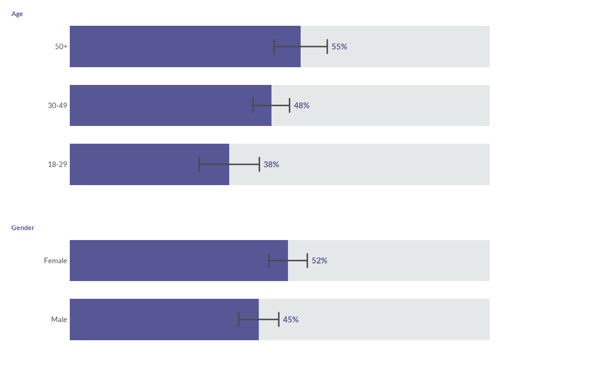
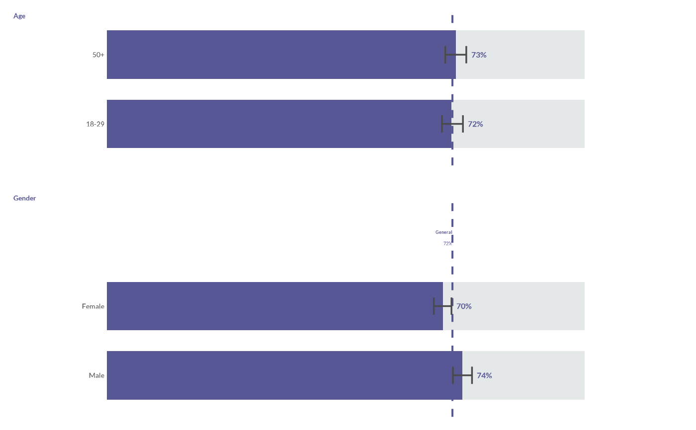
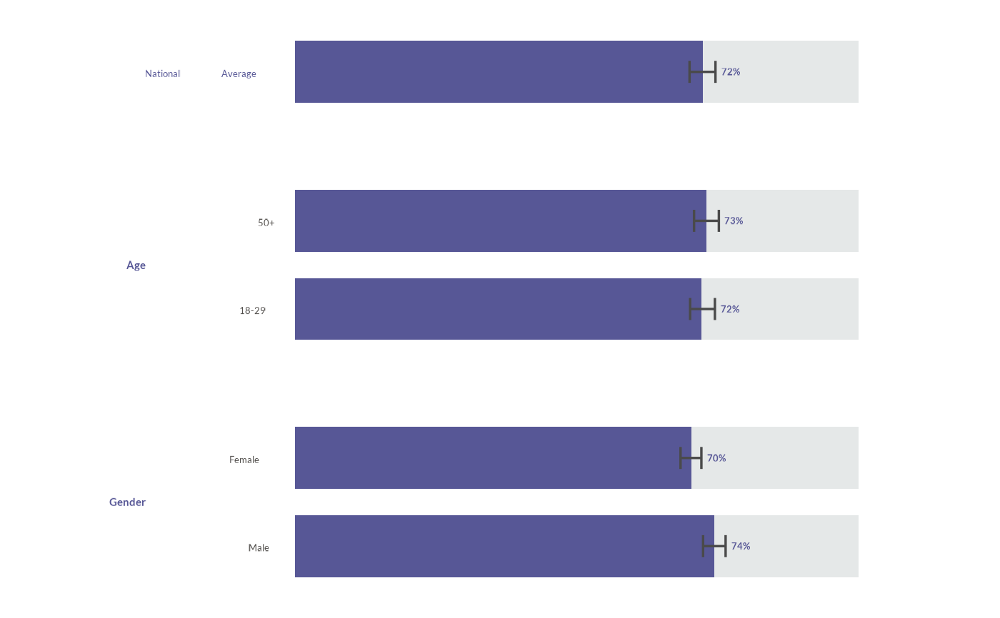
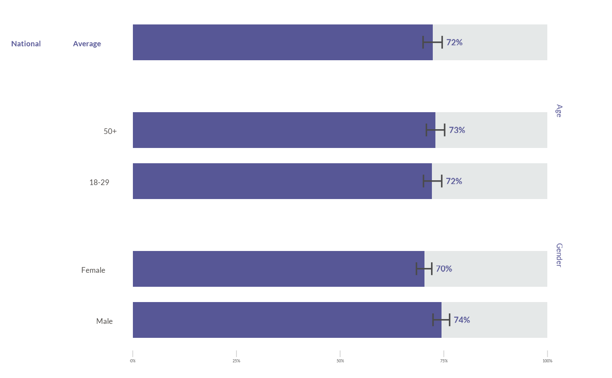
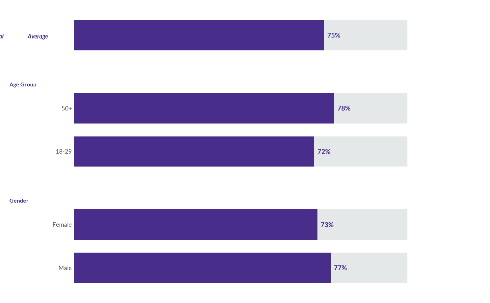

Plot a Grouped Stacked Bar Chart following WJP style guidelines
Source:R/groupbarsChart.R
wjp_groupbars.Rd![[Experimental]](figures/lifecycle-experimental.svg)
wjp_groupbars() creates a faceted horizontal stacked bar chart where bars are
grouped by categories and show a primary value (e.g., percentage) stacked with
its complement. Useful for displaying survey results broken down by demographic
groups like gender, age, income, etc.
Values supplied to target, national_value, ci_lower, and
ci_upper can be provided as proportions (0-1) or percentages (0-100).
Internally they are plotted on a 0-100 percentage scale. Confidence intervals
can be supplied directly with ci_lower and ci_upper, or computed
from sd and sample_size. When show_national = TRUE, use
national_style = "line" to draw national_value as a vertical
reference line, or national_style = "bar" to add it as a full bar row
using the same geometry, confidence interval, and label logic as the other
rows.
Usage
wjp_groupbars(
data,
target,
grouping,
levels,
colors = c("#482d8b", "#e5e8e8"),
labels = NULL,
group_order = NULL,
level_order = NULL,
show_national = FALSE,
national_value = NULL,
draw_ci = FALSE,
ci_lower = NULL,
ci_upper = NULL,
sd = NULL,
sample_size = NULL,
ci_level = 0.95,
ptheme = WJP_theme(),
national_label = NULL,
national_style = "line",
national_position = "top",
national_ci_lower = NULL,
national_ci_upper = NULL,
national_group_label = " ",
label_position = "end",
label_after_ci = TRUE,
facet_ncol = 1,
bar_width = 0.7,
show_axis = FALSE,
strip_position = "left",
national_var = NULL,
national_level = NULL
)Arguments
- data
A data frame containing the data to be plotted.
- target
String. Column name containing the numeric values to plot. Values can be proportions (0-1) or percentages (0-100).
- grouping
String. Column name for the faceting variable (e.g., "Gender", "Age Group").
- levels
String. Column name for the categories within each group (e.g., "Male", "Female").
- colors
Character vector of length 2 with hex colors for primary and secondary bars. Default is c("#482d8b", "#e5e8e8").
- labels
String. Column name containing custom labels. If NULL, percentages are auto-generated. Default is NULL.
- group_order
Character vector specifying the order of all facet groups. Default is NULL (uses data order).
- level_order
Named list where names are group values and values are character vectors specifying the order of levels within each group. Default is NULL (uses data order). For horizontal bars, ggplot2 draws the first discrete y-axis level at the bottom, so list levels accordingly when controlling the visual order.
- show_national
Logical. If TRUE, adds a vertical national average line and a rich text annotation by default, or a national average bar when
national_style = "bar". Default is FALSE.- national_value
Numeric. The national average value to display when show_national is TRUE.
- draw_ci
Logical. If TRUE, draws a per-category confidence interval on each primary bar. Default is FALSE.
- ci_lower
String. Optional column name with precomputed lower confidence interval bounds. If supplied,
ci_uppermust also be supplied.- ci_upper
String. Optional column name with precomputed upper confidence interval bounds. If supplied,
ci_lowermust also be supplied.- sd
String. Column name with the standard deviation used to build the confidence interval when
ci_lowerandci_upperare not supplied. Default is NULL.- sample_size
String. Column name with the number of observations used to build the confidence interval when
ci_lowerandci_upperare not supplied. Default is NULL.- ci_level
Numeric. Confidence level for the interval. Default is 0.95.
- ptheme
A ggplot2 theme. Default is WJP_theme().
- national_label
String. Optional single rich text label for the national average annotation. If NULL, a label is generated from
national_value.- national_style
String. How to display the national value when
show_national = TRUE: "line", "bar", or "none". Default is "line".- national_position
String. Position of the national bar when
national_style = "bar": "top" or "bottom". Default is "top".- national_ci_lower
Numeric. Optional lower confidence interval bound for the national bar. Uses the same 0-1 or 0-100 scale detection as
target.- national_ci_upper
Numeric. Optional upper confidence interval bound for the national bar. Uses the same 0-1 or 0-100 scale detection as
target.- national_group_label
String. Facet label used for the national bar. Default is " " to create a blank facet strip.
- label_position
String. Position for value labels: "end", "inside", or "none". Default is "end".
- label_after_ci
Logical. If TRUE and confidence intervals are drawn, places labels after the upper CI bound when available. Default is TRUE.
- facet_ncol
Integer. Number of facet columns. Default is 1.
- bar_width
Numeric. Width of bars. Default is 0.7.
- show_axis
Logical. If TRUE, displays the X axis with percentage breaks (0%, 25%, 50%, 75%, 100%) at the bottom. Default is FALSE.
- strip_position
String. Position of facet strip labels: "left" places them vertically on the left side, "top" places them horizontally above each group. Default is "left".
- national_var
String. Value in the
groupingcolumn that identifies the national average row (e.g., "general", "Overall"). When specified, this row is displayed with a special formatted label (bold, italic, colored) usinggeom_richtext(). Default is NULL.- national_level
String. Value in the
levelscolumn corresponding to the national average label (e.g., "National Average"). Required whennational_varis specified. Default is NULL.
Examples
library(dplyr)
library(ggplot2)
# Load WJP fonts (optional)
wjp_fonts()
# Create sample data
data_groups <- data.frame(
group = c("Gender", "Gender", "Age", "Age", "Age"),
category = c("Male", "Female", "18-29", "30-49", "50+"),
value = c(0.45, 0.52, 0.38, 0.48, 0.55)
)
# Basic grouped bars
wjp_groupbars(
data_groups,
target = "value",
grouping = "group",
levels = "category"
)
 # With custom colors and group order
wjp_groupbars(
data_groups,
target = "value",
grouping = "group",
levels = "category",
colors = c("#482d8b", "#e5e8e8"),
group_order = c("Gender", "Age")
)
# With custom colors and group order
wjp_groupbars(
data_groups,
target = "value",
grouping = "group",
levels = "category",
colors = c("#482d8b", "#e5e8e8"),
group_order = c("Gender", "Age")
)
 # With a per-category confidence interval (requires sd + sample_size columns)
data_ci <- data.frame(
group = c("Gender", "Gender", "Age", "Age", "Age"),
category = c("Male", "Female", "18-29", "30-49", "50+"),
value = c(0.45, 0.52, 0.38, 0.48, 0.55),
se = c(0.50, 0.50, 0.49, 0.50, 0.50),
n = c(420, 460, 180, 510, 240)
)
wjp_groupbars(
data_ci,
target = "value",
grouping = "group",
levels = "category",
draw_ci = TRUE,
sd = "se",
sample_size = "n"
)
# With a per-category confidence interval (requires sd + sample_size columns)
data_ci <- data.frame(
group = c("Gender", "Gender", "Age", "Age", "Age"),
category = c("Male", "Female", "18-29", "30-49", "50+"),
value = c(0.45, 0.52, 0.38, 0.48, 0.55),
se = c(0.50, 0.50, 0.49, 0.50, 0.50),
n = c(420, 460, 180, 510, 240)
)
wjp_groupbars(
data_ci,
target = "value",
grouping = "group",
levels = "category",
draw_ci = TRUE,
sd = "se",
sample_size = "n"
)

# Percentage-scale input with precomputed confidence intervals and a general line
data_pct <- data.frame(
group = c("Gender", "Gender", "Age", "Age", "Age"),
category = c("Men", "Women", "18-24", "25-54", "55+"),
value = c(74.4, 70.3, 72.1, 73.1, 73.0),
lower = c(72.4, 68.4, 70.1, 71.0, 70.8),
upper = c(76.4, 72.1, 74.5, 75.2, 75.2)
)
wjp_groupbars(
data_pct,
target = "value",
grouping = "group",
levels = "category",
group_order = c("Gender", "Age"),
level_order = list(
Gender = c("Women", "Men"),
Age = c("55+", "25-54", "18-24")
),
draw_ci = TRUE,
ci_lower = "lower",
ci_upper = "upper",
show_national = TRUE,
national_value = 72.3,
national_label = "General"
)

# National average as its own bar with its own confidence interval
wjp_groupbars(
data_pct,
target = "value",
grouping = "group",
levels = "category",
colors = c("#482d8b", "#e5e8e8"),
group_order = c("Gender", "Age"),
level_order = list(
Gender = c("Women", "Men"),
Age = c("55+", "25-54", "18-24")
),
draw_ci = TRUE,
ci_lower = "lower",
ci_upper = "upper",
show_national = TRUE,
national_value = 72.3,
national_style = "bar",
national_label = "National Average",
national_ci_lower = 70.0,
national_ci_upper = 74.6
)

# With visible X axis (publication-style layout)
wjp_groupbars(
data_pct,
target = "value",
grouping = "group",
levels = "category",
colors = c("#482d8b", "#e5e8e8"),
group_order = c("Gender", "Age"),
level_order = list(
Gender = c("Women", "Men"),
Age = c("55+", "25-54", "18-24")
),
draw_ci = TRUE,
ci_lower = "lower",
ci_upper = "upper",
show_national = TRUE,
national_value = 72.3,
national_style = "bar",
national_label = "National Average",
national_ci_lower = 70.0,
national_ci_upper = 74.6,
show_axis = TRUE
)

# Using national_var and national_level for inline national average formatting
data_disagg <- data.frame(
disaggregation = c("general", "Age Group", "Age Group", "Gender", "Gender"),
demographics = c("National Average", "18-29", "50+", "Male", "Female"),
pct_weighted = c(0.75, 0.72, 0.78, 0.77, 0.73)
)
wjp_groupbars(
data_disagg,
target = "pct_weighted",
grouping = "disaggregation",
levels = "demographics",
group_order = c(" ", "Age Group", "Gender"),
national_var = "general",
national_level = "National Average"
)
